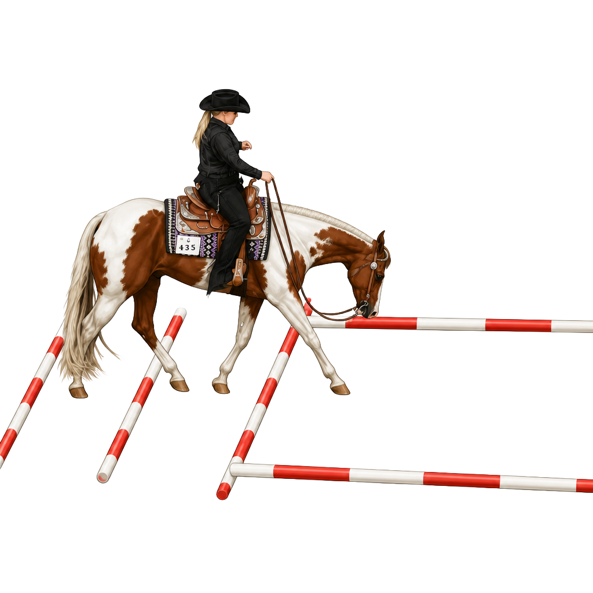
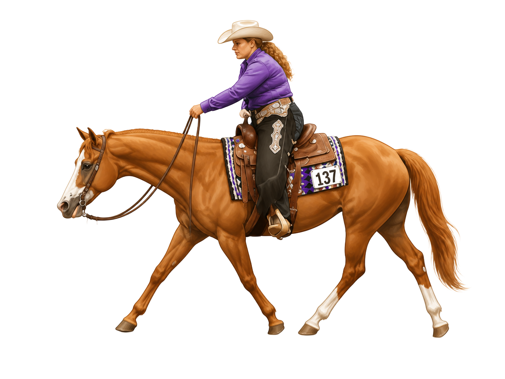
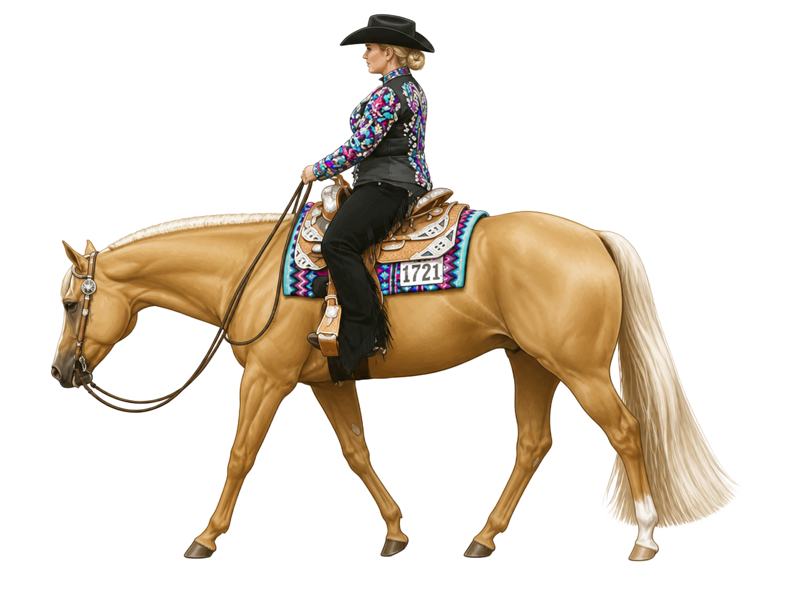
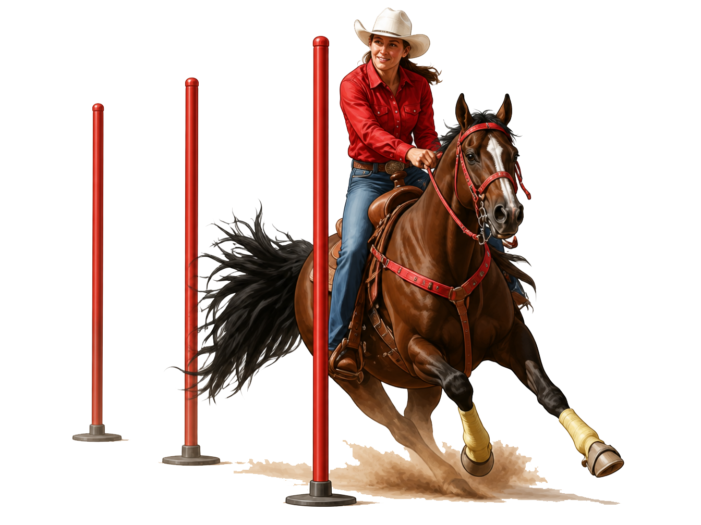
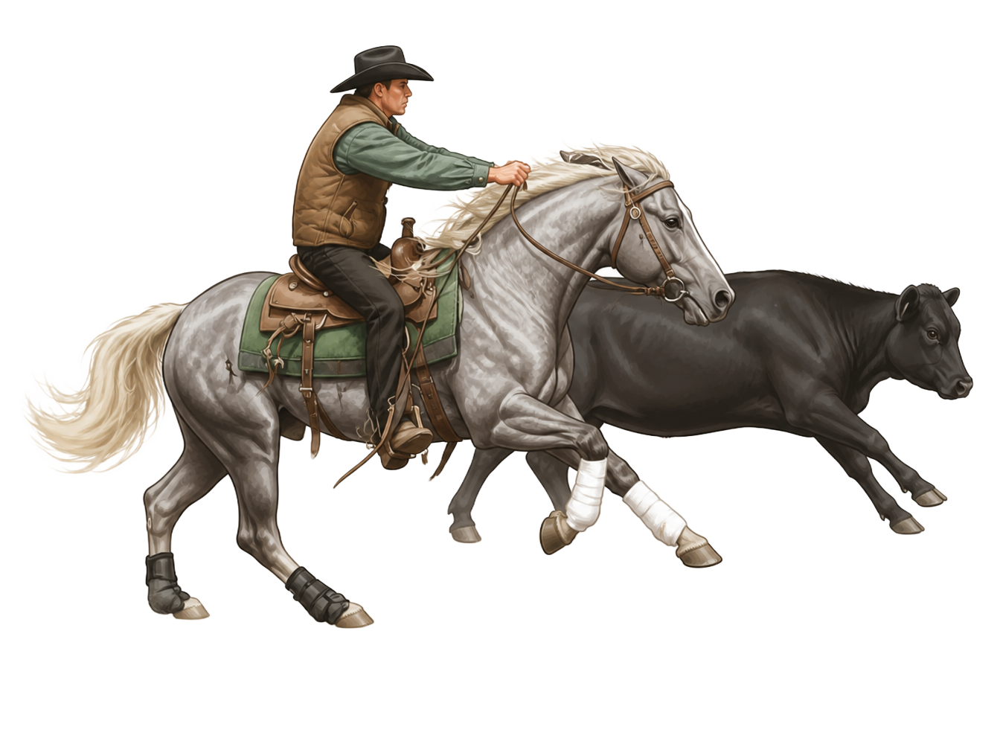
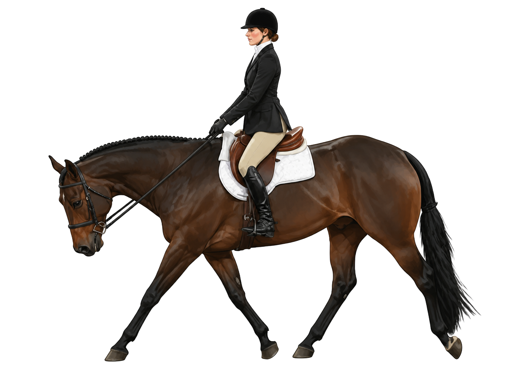
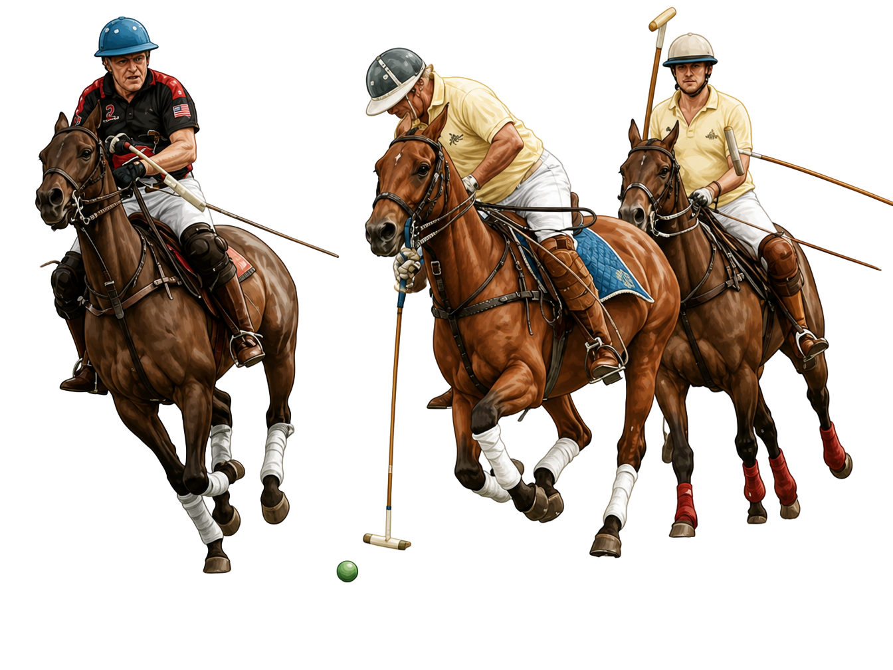
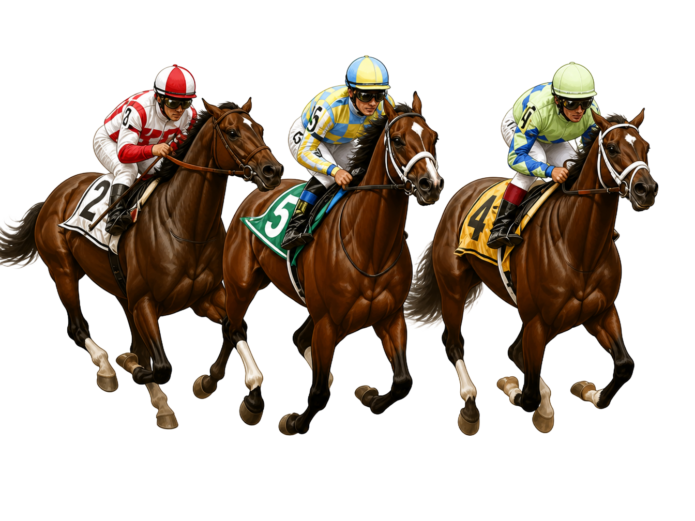

WesternTrail Riding
Trail riding involves riding over natural paths or obstacle courses that reflect real outdoor terrain. It focuses on steady control, balance, and safe navigation.
Western and English are the two main riding categories most riders learn first. Each one includes several different disciplines, and each discipline has its own goals, movement style, tack, and competition rules.
Within Western and English riding are individual disciplines. Each discipline developed over time as riding became more specialized. They are built around specific goals, movement patterns, equipment, and judging standards.
For example, reining is a Western discipline focused on precise patterns and cattle-working movements. Dressage is an English discipline focused on balance, structure, and clear communication between horse and rider.
💡 Did You Know
Reining is one of the few Western disciplines recognized by the Fédération Equestre Internationale (FEI), the international governing body for equestrian sport. This means reining riders can compete at an international level alongside dressage, jumping, and eventing athletes.
Western disciplines developed from ranch and cattle work. They focus on steady control, practical movement, and skills used in real working environments.

WesternTrail riding involves riding over natural paths or obstacle courses that reflect real outdoor terrain. It focuses on steady control, balance, and safe navigation.

WesternRanch riding highlights smooth, useful movement similar to everyday ranch work. Horses are expected to be calm, responsive, and balanced.

WesternWestern pleasure is a judged class where horses are shown at a walk, jog, and lope. The goal is a calm, steady horse that moves smoothly and willingly.
 Western
WesternReining is a pattern class that includes spins, circles, sliding stops, rollbacks, and transitions. It focuses on control, precision, and responsiveness.
 Western
WesternBarrel racing is a timed event where horse and rider race around three barrels in a cloverleaf pattern. Speed and tight turns are both important.

WesternPole bending is a timed event where horse and rider weave through a straight line of poles. It tests speed, accuracy, and control.

WesternCow work includes events like cutting, roping, and team penning. These are based on real ranch tasks where horses help move and control cattle.
 Western
WesternWestern horsemanship focuses on the rider’s position, control, and ability to guide the horse through a pattern with accuracy and smooth communication.
English disciplines focus on balance, precision, and forward movement. They range from structured arena work to jumping and speed-based sports.
 English
EnglishDressage is a structured discipline that focuses on precise movement, balance, and communication between horse and rider.
 English
EnglishHunters is a jumping discipline that focuses on smooth rhythm, steady pace, and clean form over fences.
 English
EnglishJumpers is a timed jumping sport where horse and rider aim to complete a course quickly with as few faults as possible.
 English
EnglishEventing is a three-phase sport that includes dressage, cross-country, and stadium jumping. It tests versatility, fitness, and skill.

EnglishEquitation focuses on the rider’s position and ability to communicate clearly and effectively while maintaining balance and control.
 English
EnglishSaddle seat is a show style often used with high-stepping breeds. It focuses on animated movement and polished presentation in the arena.

EnglishPolo is a fast-paced team sport where riders use mallets to hit a ball toward a goal. It requires speed, teamwork, and control.

EnglishHorse racing is a speed sport where horses gallop over set distances. Riders use a forward seat to help the horse stay balanced at high speed.